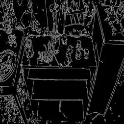

Saved outputs, not live inference. No GPU is available for this site, so nothing is generated when you visit. Every image below is cropped from a figure committed in the repo, produced by the 12k-step checkpoint.
A ControlNet written by hand, checked against diffusers, then trained on COCO.
ControlNet makes Stable Diffusion follow a spatial condition. This one is a from-scratch PyTorch implementation for Canny edges on a frozen SD v1.5. Pick a sample and drag the divider: both sides use the same prompt and seed, and only the control differs.
Eight validation samples

Prompt, from the COCO caption
A dirty table has incense burners on it.
Edge recall share of input edges reproduced
0.430 rises to 0.856
From assets/diagnostic.png (scripts/diagnose.py: 25 steps, seed 0, scale 0 vs 1). The saved figure holds each panel at about 253 px, so that is the resolution shown. These are the first eight lines of the validation file, not a hand-picked set. Quality is mixed: layouts track the edges, while faces and small text often break down.
Control on against control off
Same trained model with controlnet_conditioning_scale 1 and 0. 100 COCO val2017 samples, identical seeds. From outputs/eval_report.json and outputs/eval_baseline.json.
Control lifts all three fidelity scores
| Metric | On | Off |
|---|---|---|
| Canny edge recall (higher is better) | 0.771 | 0.363 |
| Canny edge F1 (higher is better) | 0.787 | 0.338 |
| Canny SSIM (higher is better) | 0.542 | 0.354 |
| CLIP score (text alignment) | 31.55 | 31.76 |
| FID at n=100 (too noisy to rely on) | 173.06 | 199.21 |
CLIP is essentially flat: the model follows the edges without losing prompt alignment. FID needs thousands of samples, so at 100 it is shown for the record only.
Every one of the eight samples improves
Recorded per-sample values from the 8-sample diagnostic in scripts/plot_training.py. Hover or tab to a row for its full prompt.
Parity with diffusers
The headline test builds this ControlNet and the diffusers.ControlNetModel reference from the same small SD-shaped U-Net, randomises the reference weights so the zero-initialised path is not a trivial 0 = 0, copies them across, and compares every residual within a tolerance of 1e-4.
The hand-written part is the wiring in src/models/controlnet.py: conditioning network, cloned encoder and zero convolutions. It reuses Stable Diffusion's own block primitives, which is why parity can be this tight. The test does not use the full SD v1.5 weights.
$ pytest tests/ -v
test_controlnet_residuals_match_diffusers PASSED
test_one_training_step_runs_and_only_... PASSED
test_zero_conv_outputs_zero PASSED
test_zero_module_zeros_params PASSED
4 passed in 156.14s
max |ours - reference|, same inputs
6 down residuals 0.0
mid residual 0.0
largest residual 3.61Run on CPU, 3 November 2026, at commit e96be02. torch 2.7.1, diffusers 0.34.0.
Training
Zero convolutions lift off zero, and have not finished
Recorded by scripts/diagnose.py at checkpoints 2k, 4k and 12k. At 12k the control path is still about 20 to 40 times below a normal conv's scale, so the model works but has not saturated. No full loss curve is committed; the notebook describes the loss as flat and noisy at roughly 0.10 to 0.20, which is why this is the signal to watch.
- Data
- 45k-image COCO train2017 subset
- Steps
- 12,000 at 512²
- Effective batch
- 16 (4 × 4 accumulation)
- Learning rate
- 1e-5, constant, 500 warmup
- Precision
- bf16
- Prompt dropout
- 50%
- Trainable
- 361,279,120 parameters
- Frozen U-Net
- 859,520,964 parameters
From configs/full.yaml and the committed walkthrough notebook. Only Canny is trained; the other condition types are not.
How the control reaches the frozen model
Run it yourself
Weights are on Hugging Face and the code, notebook and configs are on GitHub. A hosted upload-your-own-photo demo needs a GPU to be usable, so it is not offered here.
Image sources and licences
Original photos and captions are from COCO val2017. Source and licence as listed in the COCO annotations: